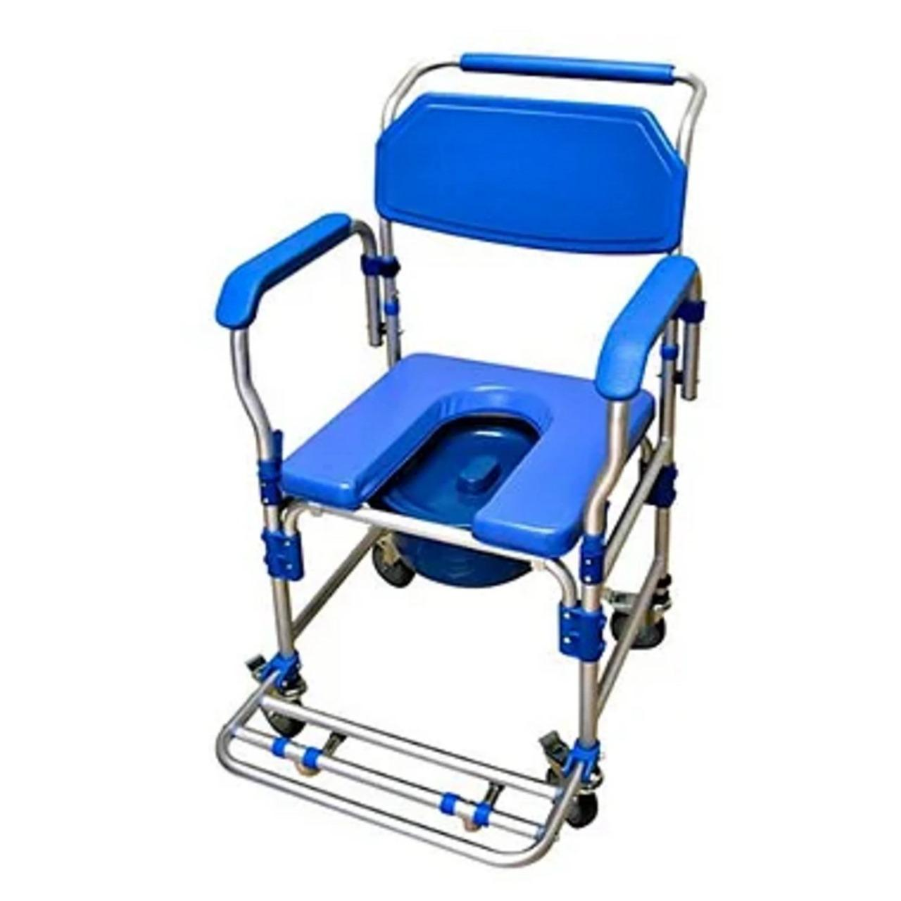
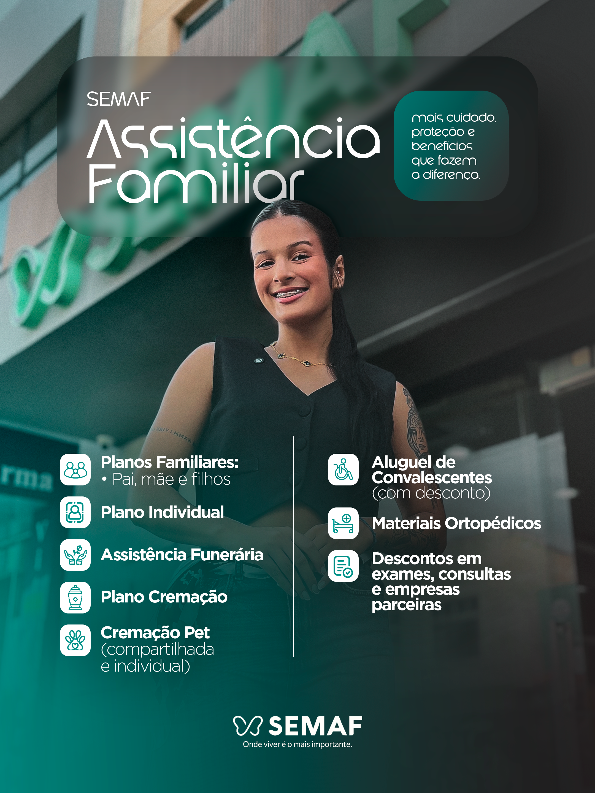
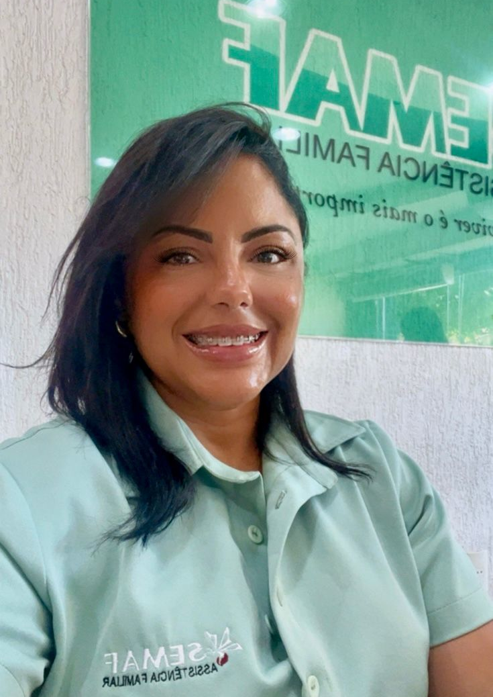
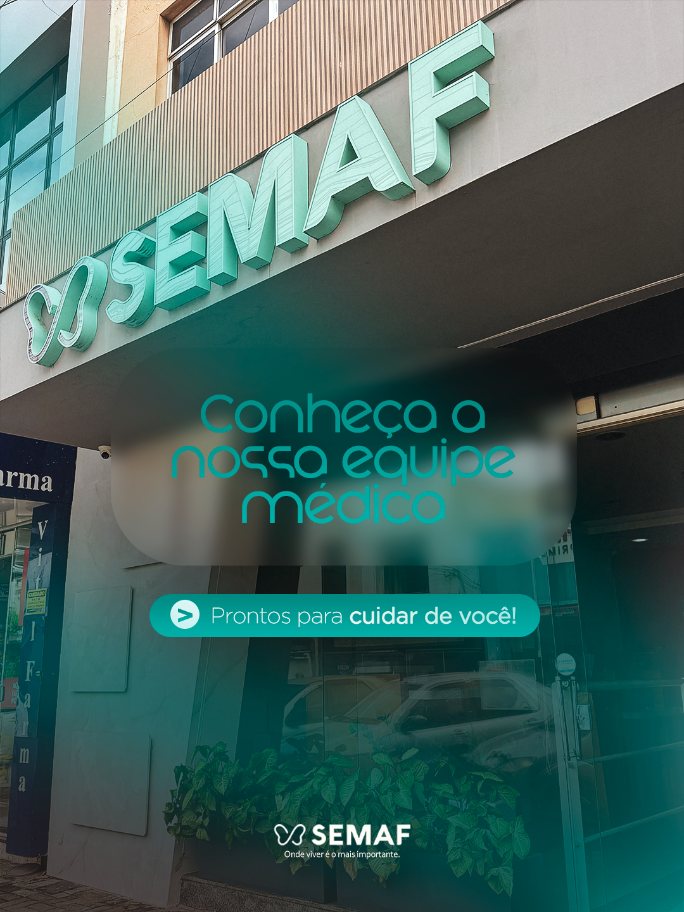
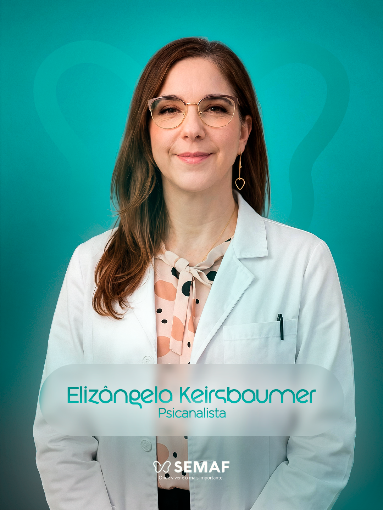
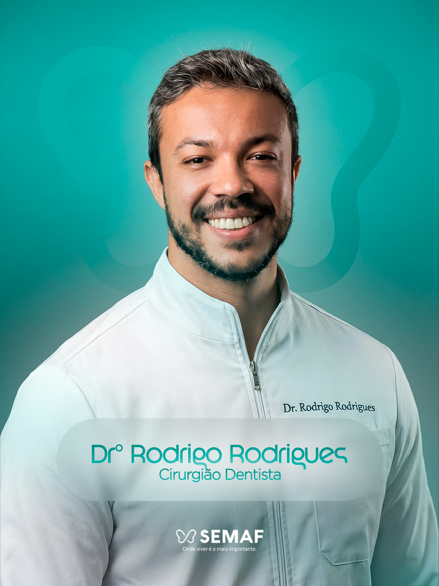
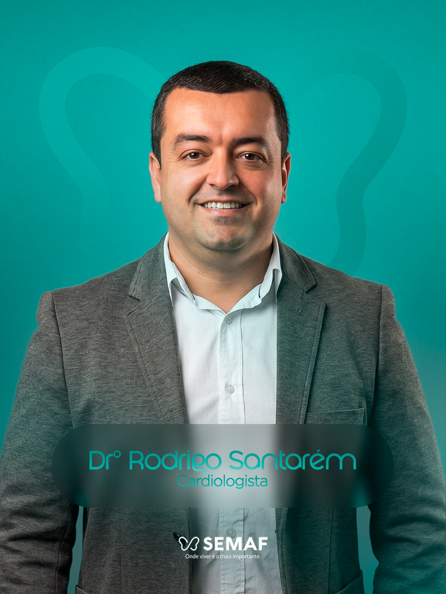
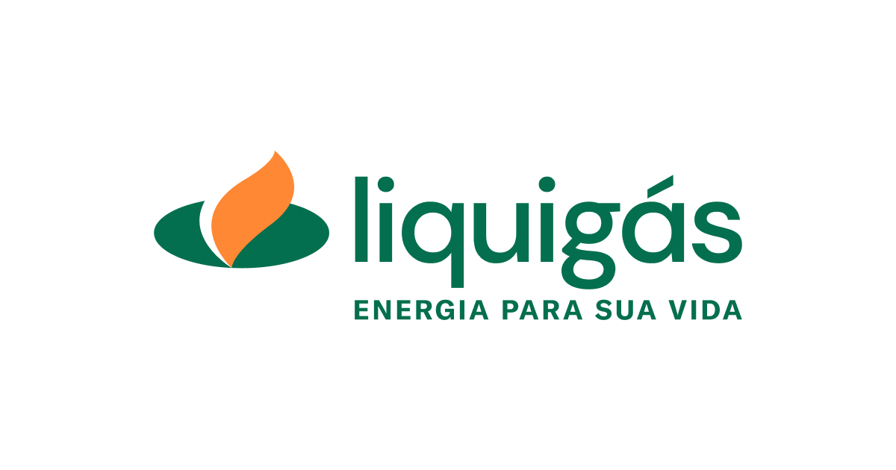
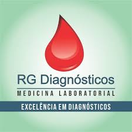

A história do SEMAF
Com mais de duas décadas de dedicação à comunidade fidelense, o SEMAF - Serviços Funerários e Assistência Familiar é referência em assistência familiar e serviços funerários em São Fidélis e região. Fundado com o compromisso de oferecer amparo e respeito às famílias nos momentos mais delicados, o SEMAF se consolidou como uma empresa séria, humana e inovadora.
Ao longo dos seus 25 anos de atuação, o SEMAF ampliou sua estrutura e serviços, sempre com foco na qualidade e na dignidade. Em 2023, a empresa lançou o plano Eternal Pets, um serviço especializado de cremação de animais de estimação, reafirmando seu compromisso com o cuidado e a preservação ambiental.
No mesmo ano, o SEMAF deu mais um passo ao conquistar a autorização do Instituto Estadual do Ambiente (Inea) para a instalação do primeiro crematório humano da região Norte e Noroeste Fluminense. Essa conquista coloca São Fidélis como referência em modernidade e respeito às escolhas das famílias no momento da despedida.
No SEMAF, acolhimento, ética e inovação caminham juntos para oferecer um atendimento humanizado, completo e de confiança. Estamos aqui para cuidar de você e da sua família — sempre.
Os Nossos Serviços:

Serviços Funerários
Oferecemos serviços funerários completos com respeito e dignidade
Saiba mais...
No SEMAF, oferecemos serviços funerários completos que incluem 04 salas velatórias amplas, climatizadas, que atendem 24h, com a preparação do corpo, fornecimento de urnas, flores, transporte fúnebre e documentação necessária. Nossa equipe experiente e atenciosa garante que cada pessoa seja homenageada com respeito, dignidade e todo o cuidado que merece. Estamos ao lado das famílias em todos os momentos, oferecendo suporte e acolhimento.

Sede Central - Atendimento Integral
Centro de atendimento com serviços médicos, odontológicos e administrativos
Saiba mais...
Nossa sede central, localizada na Avenida 7 de Setembro, 172, no centro de São Fidélis, é um espaço completo de atendimento aos associados e à comunidade. Aqui você encontra atendimento para pagamento e recebimento de carnês mensais, além de consultórios médicos e odontológicos com profissionais qualificados e parceiros do SEMAF. Oferecemos um ambiente acolhedor e estruturado para atender todas as suas necessidades com conforto e praticidade. Nossa equipe está pronta para recebê-lo de segunda a sexta-feira, das 8h às 17h, e aos sábados das 8h às 12h, sempre com atenção e respeito.

Crematório de pet
Serviço especializado de cremação para animais de estimação
Saiba mais...
O plano Eternal Pets do SEMAF oferece um serviço especializado de cremação individual para animais de estimação, realizado com todo carinho e respeito. Entregamos as cinzas em urna personalizada e certificado de cremação. Este serviço reafirma nosso compromisso com o cuidado, a preservação ambiental e o respeito pelo vínculo entre famílias e seus pets, oferecendo uma despedida digna e amorosa.

Tanatopraxia "em breve"
ainda não fazemos, mas disponibilizamos o serviço, tercerizado.
Saiba mais...
A tanatopraxia é a técnica profissional de higienizar, conservar e preparar esteticamente o corpo do falecido. Nossos especialistas realizam este serviço com máximo respeito, proporcionando uma apresentação digna e serena, permitindo que a pessoa seja velada com dignidade e oferecendo às famílias uma imagem mais próxima e pacífica de seu ente querido. Este cuidado especial traz conforto nos momentos de despedida.

Crematório Humano
Crematório da região Norte e Noroeste Fluminense
Saiba mais...
O SEMAF conquistou a autorização do Instituto Estadual do Ambiente (Inea) para a instalação do primeiro crematório humano da região Norte e Noroeste Fluminense. Este serviço moderno e respeitoso oferece às famílias uma alternativa digna e ecologicamente sustentável. O processo de cremação é realizado com total respeito, seguindo todas as normas ambientais e sanitárias, e as cinzas são entregues em urna de qualidade com certificado. Esta conquista coloca São Fidélis como referência em modernidade e respeito às escolhas das famílias.

Frota de Veículos
Transporte dedicado e respeitoso em todos os momentos
Saiba mais...
O SEMAF conta com uma frota moderna e completa de veículos especializados para atender com dignidade e respeito todas as necessidades de transporte. Nossa frota inclui veículos fúnebres equipados e climatizados, garantindo o transporte adequado e seguro. Todos os nossos veículos são mantidos em excelente estado de conservação e higienização, seguindo rigorosos padrões de qualidade. Estamos prontos para atender 24 horas por dia, 7 dias por semana, oferecendo todo o suporte necessário às famílias.
Alguns dos equipamentos que disponibilizamos para aluguéis e vendas:




Planos

Representante de Venda

Rovênia
Representante de Venda
Atendimento especializado em planos e serviços
Consultorias e orientações sobre todos os planos SEMAF
Horário disponível para agendamentos
Entre em contato para conhecer as melhores opções para sua família
Profissionais Parceiros





Empresas Parceiras
Climagem
Empresa parceira da SEMAF. Para informações e condições de atendimento, consulte nossa equipe.
Utramed
Empresa parceira da SEMAF. Para informações e condições de atendimento, consulte nossa equipe.

Liquigás
Empresa parceira da SEMAF. Para informações e condições de atendimento, consulte nossa equipe.

RG Diagnóstico
Empresa parceira da SEMAF. Para informações e condições de atendimento, consulte nossa equipe.
Nossas Localizações
Unidade Principal - Centro
SEMAF - Sede
Endereço: Av. Sete de Setembro, 172 - Centro, São Fidélis, RJ
Telefone: (22) 98822-5372
Horário:
Segunda a Sexta, 8h às 17h
sábado, 8h às 12h
Unidade Crematório
Unidade- Capela Velatoria
SEMAF CAPELA VELATORIA
Endereço: Centro / Avenida Presidente John Kennedy
Telefone: (22) 98822-5372
Horário: atendimento 24h
acesse o mapaUnidade Pureza
Capela SEMAF em Pureza
Endereço: Próximo à Ponte de Pureza
Localidade: Pureza, Distrito de São Fidélis, RJ
Telefone: (22) 98822-5372
acesse mapaPontos de Recebimento
Barro Branco
Mercearia do Carlinhos
Cambiasca
Mercearia do Josemar
Colônia
Papelaria do Éwerson
Pureza
Mercado Côrtes
Valâo dos Milagres
Farmácia do Michael